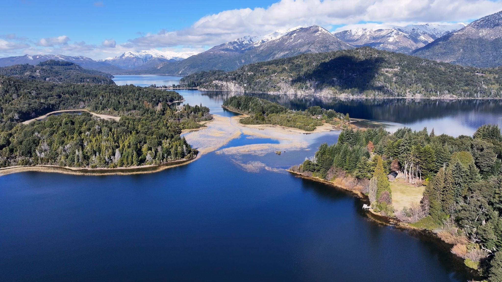
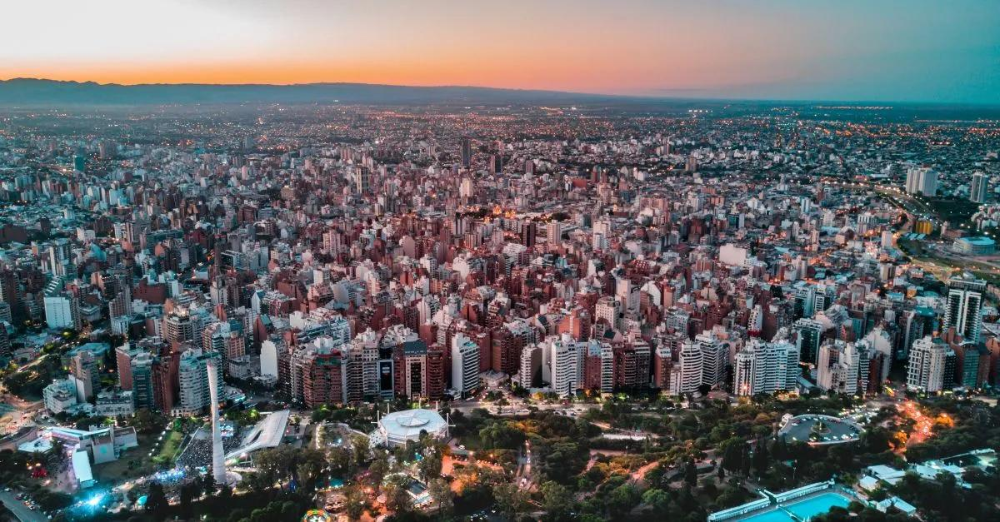
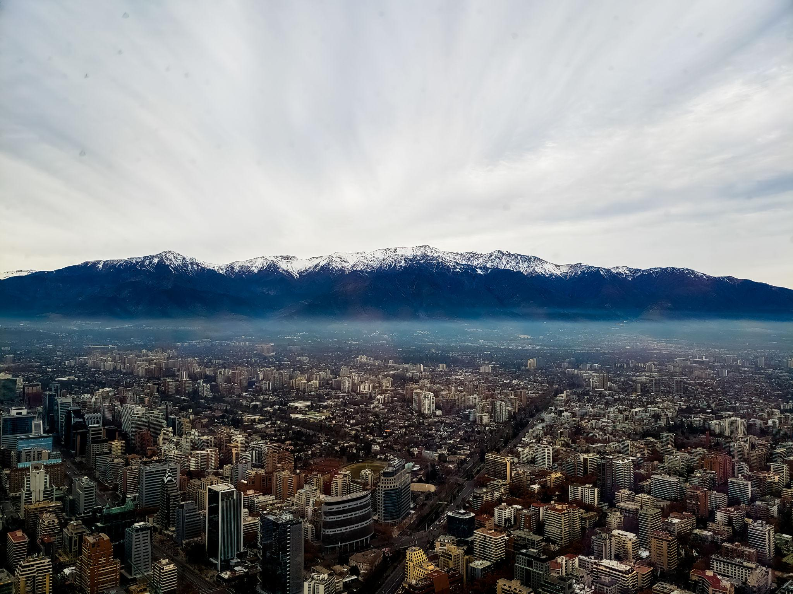

Destinos
Conexiones Nacionales e Internacionales
SkyAir Hub conecta pasajeros con los principales destinos turísticos, urbanos y comerciales de Latinoamérica mediante múltiples aerolíneas.

Bariloche
Uno de los destinos turísticos más importantes de Argentina, reconocido por sus paisajes naturales, lagos y actividades de montaña.
Disponible con vuelos diarios desde Buenos Aires y conexiones regionales.

Córdoba
Centro universitario y empresarial clave del país, con gran movimiento turístico y comercial durante todo el año.
Cuenta con vuelos frecuentes operados por distintas aerolíneas.
Iguazú
Destino internacional reconocido por las Cataratas del Iguazú y el turismo natural de la región.
SkyAir Hub facilita conexiones rápidas y servicios turísticos integrados.

Santiago de Chile
Importante conexión internacional para viajes de negocios, turismo y conexiones regionales dentro de Sudamérica.
Operado mediante acuerdos con aerolíneas regionales e internacionales.